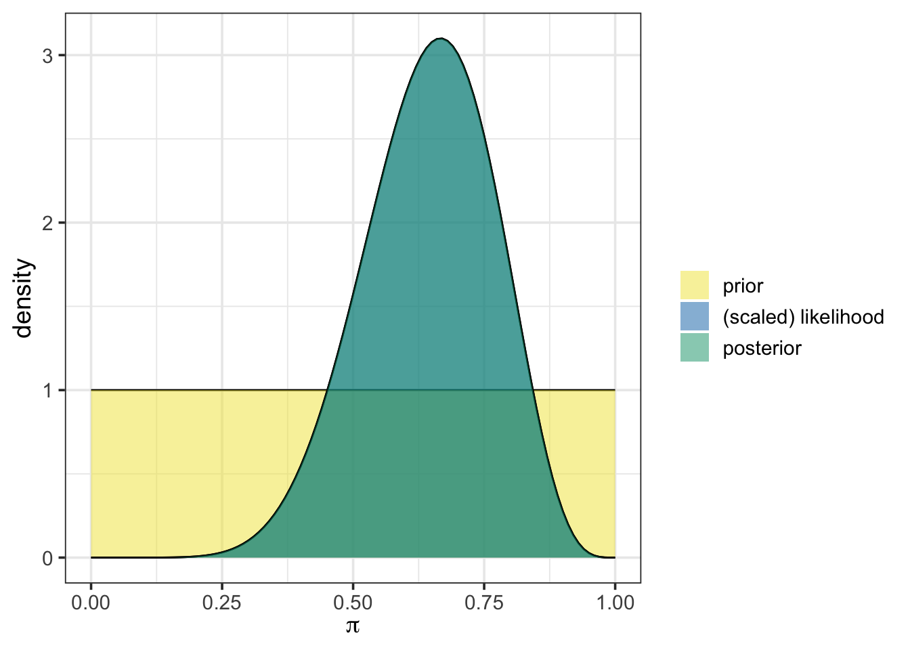
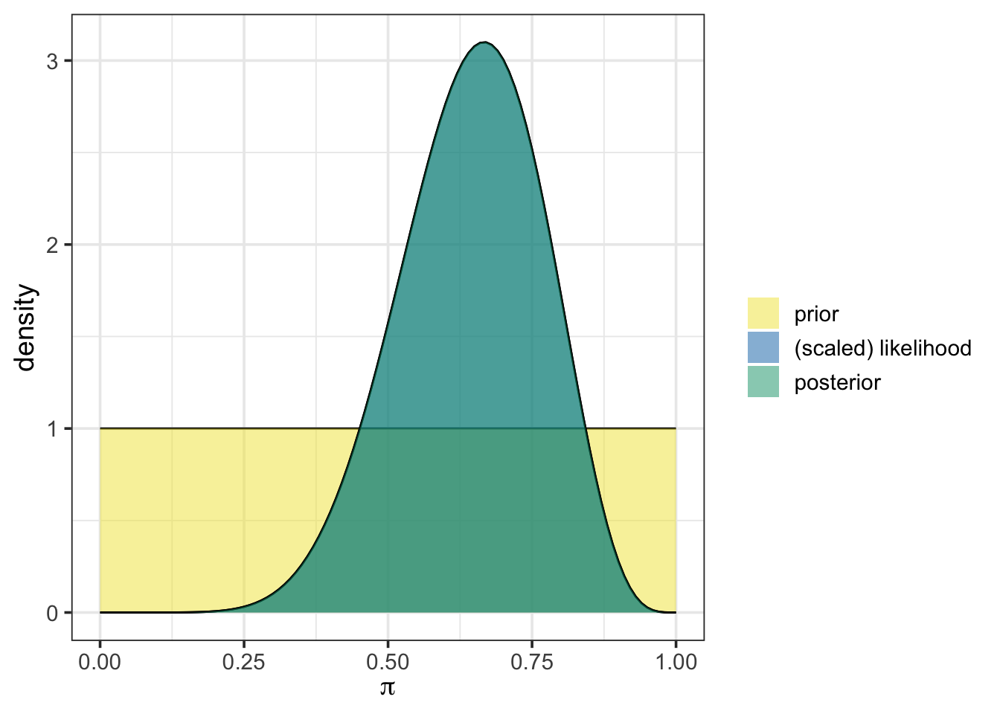
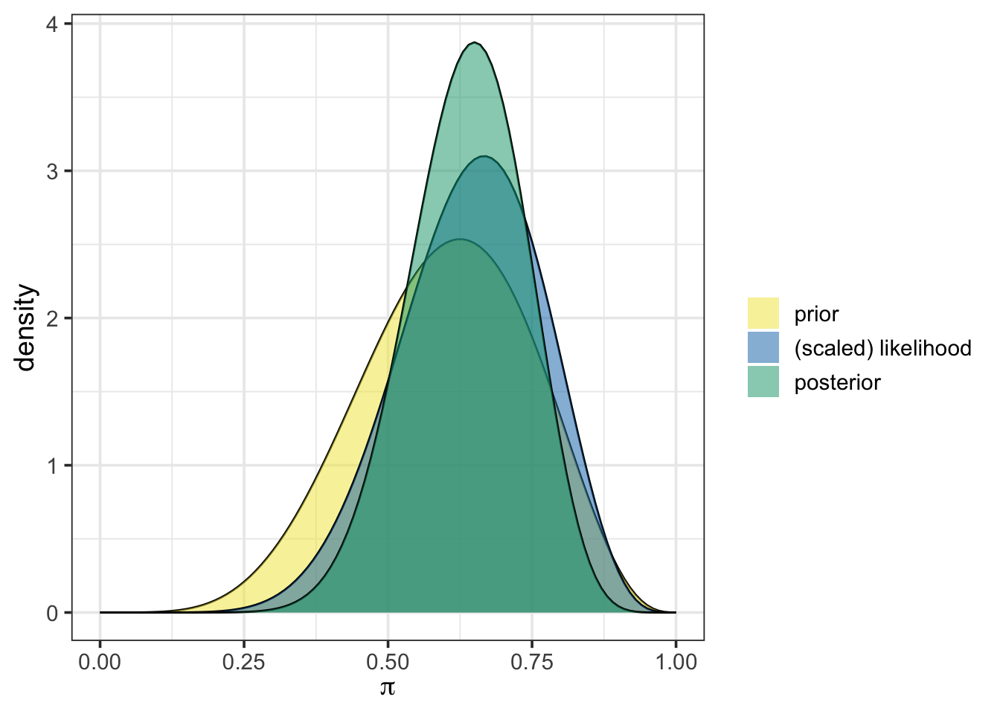

plot_beta_binomial(alpha = 1, beta = 1, y = 8, n = 12)
This activity is a context-free scaffold. You’ll almost surely find it to be incomplete, and that’s on purpose! We are designing this series of activities to have a domain-specific context laid over them. Throughout the activity, you’ll see purple text, which is text that should be replaced with context-specific content. A rough draft completed activity will be made available here when it is ready.
Statistics Goals: The statistics-focused goals of this activity are as follows:
Course Objectives: This activity would map to course-level objectives similar to the following. Note that this is not an exhaustive list, nor should it be interpreted that objectives must be phrased identically. This is to give an idea as to the wide variety of contexts this activity might be placed in.
Subject-Area Objectives: This section will be utilized to identify objectives/outcomes specific to the course/subject to which the activity context is linked. This allows adopters to cover objectives associated with their course while embedding Bayesian thinking.
The following subsections outline the background information for this activity from both a statistics and domain-specific lens.
There are many statistical tools which can be used to test hypotheses about population parameters. Broadly speaking, these tools fall into three categories:
Perhaps you’ve encountered frequentist methods previously. These methods depend on distribution assumptions and the Central Limit Theorem. In this notebook, we engage in extracting and interpreting a credible interval from a posterior distribution. We’ll provide a quick recap on the posterior distribution and how it is obtained from our prior distribution and out observed data in this notebook, but check back on our first activity for more details.
This subsection includes background on the domain-specific context for the activity.
Let’s build off of what we learned in the first activity and continue trying to estimate the [population parameter in context] by extracting a credible interval from the posterior distribution.
In Bayesian Inference, a prior distribution is an expression of our prior beliefs about a population parameter. It acknowledges our uncertainties while, at the same time, allowing prior knowledge or experiences to have some influence on our conclusions. In this way, we aren’t depending on the randomly sampled data to completely determine our findings.
In our first activity, we saw that we can obtain the posterior distribution from our prior and our data by making use of a form of Bayes’ Rule.
\[\mathbb{P}\left[\text{parameter value} \mid \text{data}\right] = \frac{\mathbb{P}\left[\text{data} \mid \text{parameter value}\right]\cdot \mathbb{P}\left[\text{parameter value}\right]}{\mathbb{P}\left[\text{data}\right]}\]
In that activity, we did all of the Bayesian updating to obtain the prior “by hand”. That is, we built the posterior distribution by explicitly applying the relationship above via code. You could read through the code and see exactly how and where the update was being made.
{bayesrules}Beginning with this activity, we’ll shift to less transparent, but more convenient, functionality to conduct the Bayesian updating from here on out. The Bayes Rules! book written by Johnson, Ott, and Dogucu along with their corresponding {bayesrules} R package provides the excellent functionality that we’ll benefit from.
If you recall, in that first activity we had begun by assuming a completely uninformative prior – a beta distribution with one observed success and one observed failure. We then updated that prior with our initially observed data including eight (8) successes out of twelve (12) observations. We can quickly obtain a plot of our prior, our data likelihood, our posterior, and some summary statistics just by using the plot_beta_binomial() and summarize_beta_binomial() functions from {bayesrules}.
plot_beta_binomial(alpha = 1, beta = 1, y = 8, n = 12)
From the plot above, we can see our assumed prior distribution in yellow and our posterior distribution in a purplish color. Note that the posterior and the scaled likelihood overlap exactly here because of our assumed uniform prior.
Now we’ll use summarize_beta_binomial() to obtain summary statistics on the prior and posterior distributions.
summarize_beta_binomial(alpha = 1, beta = 1, y = 8, n = 12)| model | alpha | beta | mean | mode | var | sd |
|---|---|---|---|---|---|---|
| prior | 1 | 1 | 0.5000000 | NaN | 0.0833333 | 0.2886751 |
| posterior | 9 | 5 | 0.6428571 | 0.6666667 | 0.0153061 | 0.1237179 |
We’ll quickly revisit the second thing we did in that activity as well. You may remember that we got advice from an expert, indicating that we suspect that the population proportion should be near 60%, given prior research results. At that point, we re-evaluated our choice of prior distribution to reflect this. We chose a weak prior, which was still a beta distribution but with 6 previously observed successes and 4 previously observed failures. Such a prior is weak because it assumes information from very few previous observations.
Let’s plot that prior, along with the scaled likelihood and posterior distribution using plot_beta_binomial() and also obtain the numerical summaries for the prior and posterior distributions while we are at it.
plot_beta_binomial(alpha = 6, beta = 4, y = 8, n = 12)
summarize_beta_binomial(alpha = 6, beta = 4, y = 8, n = 12)| model | alpha | beta | mean | mode | var | sd |
|---|---|---|---|---|---|---|
| prior | 6 | 4 | 0.6000000 | 0.625 | 0.0218182 | 0.1477098 |
| posterior | 14 | 8 | 0.6363636 | 0.650 | 0.0100611 | 0.1003050 |
From the output above, we can see that the prior, the scaled likelihood, and the posterior are all distinct. The prior and the likelihood of our observed data act together to arrive at the posterior distribution.
While we are transitioning to the more “black box” functionality in this activity (and you’ll continue with similar functionality in the remaining activities too), the foundation you built in engaging with the first activity should give you some intuition about what functions like plot_beta_binomial() and summarize_beta_binomial() are doing “under the hood”.
Take this opportunity to discuss what is happening “behind the scenes” when the plot_beta_binomial() function is run.